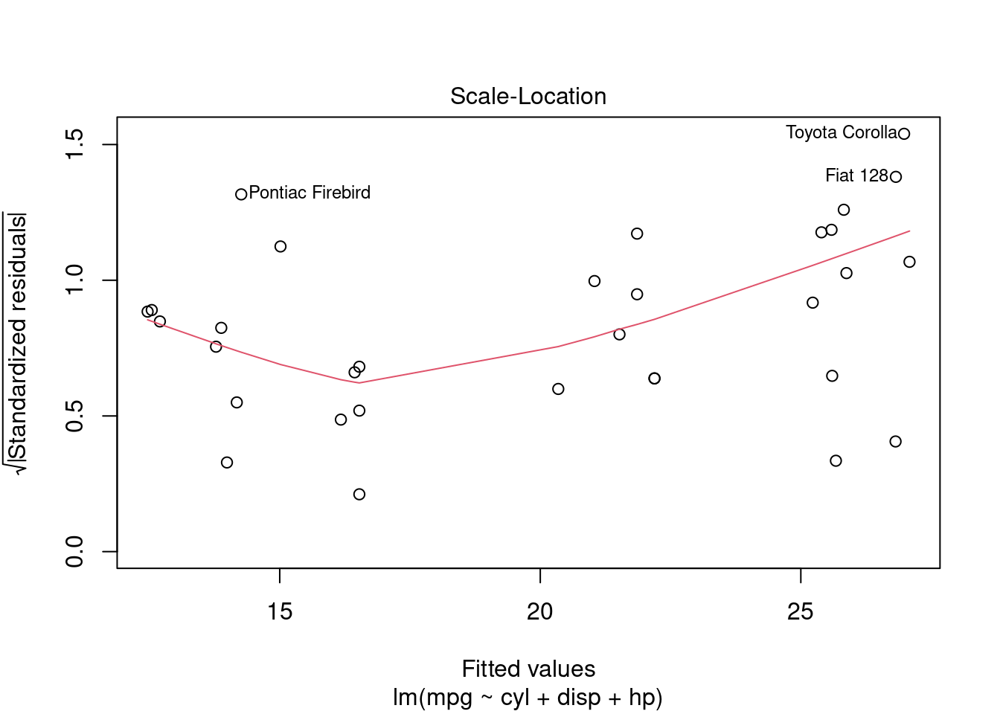
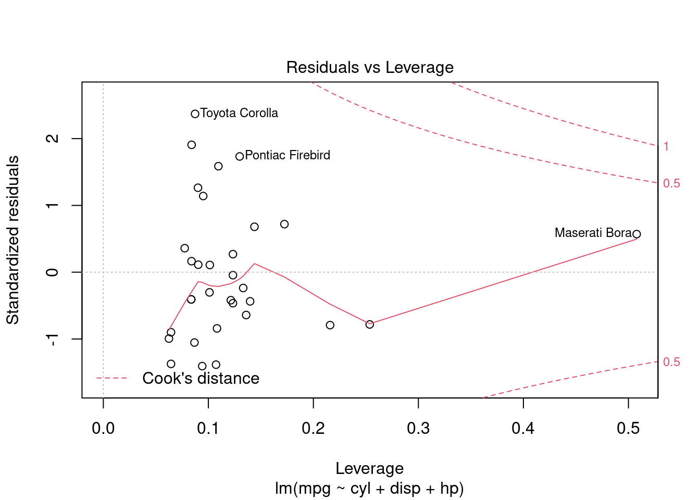
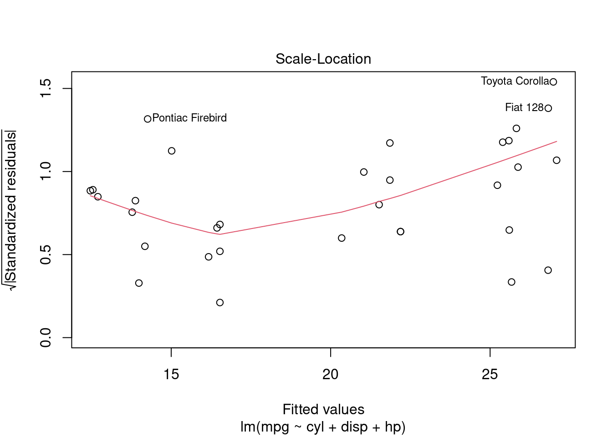
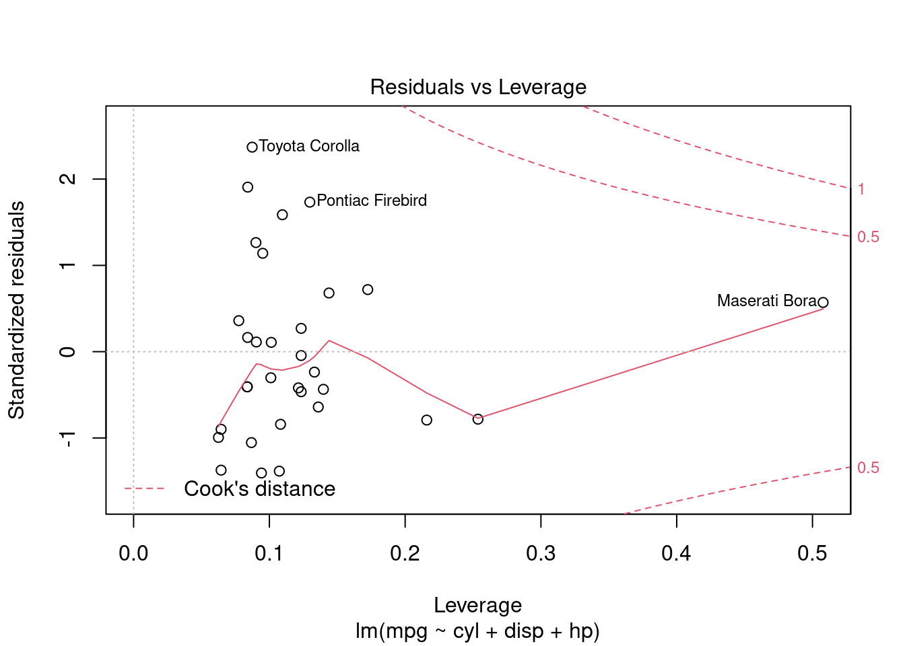

5 La régression linéaire par MCO
Dans ce document nous passons rapidement en revue quelques commandes liées à la régression linéaire par MCO dans R. Ce document n’est pas exhaustif, il existe un grand nombre d’outils dans R, nous n’en voyons ici qu’une petite partie.
5.1 La commande de base : lm() et summary()
Commençons par ouvrir la base de données mtcars préinstallée dans R, listons ses premières lignes et regardons les statistiques descriptives des variables qui y sont contenues
## mpg cyl disp hp drat wt qsec vs am gear carb
## Mazda RX4 21.0 6 160 110 3.90 2.620 16.46 0 1 4 4
## Mazda RX4 Wag 21.0 6 160 110 3.90 2.875 17.02 0 1 4 4
## Datsun 710 22.8 4 108 93 3.85 2.320 18.61 1 1 4 1
## Hornet 4 Drive 21.4 6 258 110 3.08 3.215 19.44 1 0 3 1
## Hornet Sportabout 18.7 8 360 175 3.15 3.440 17.02 0 0 3 2
## Valiant 18.1 6 225 105 2.76 3.460 20.22 1 0 3 1## mpg cyl disp hp
## Min. :10.40 Min. :4.000 Min. : 71.1 Min. : 52.0
## 1st Qu.:15.43 1st Qu.:4.000 1st Qu.:120.8 1st Qu.: 96.5
## Median :19.20 Median :6.000 Median :196.3 Median :123.0
## Mean :20.09 Mean :6.188 Mean :230.7 Mean :146.7
## 3rd Qu.:22.80 3rd Qu.:8.000 3rd Qu.:326.0 3rd Qu.:180.0
## Max. :33.90 Max. :8.000 Max. :472.0 Max. :335.0
## drat wt qsec vs
## Min. :2.760 Min. :1.513 Min. :14.50 Min. :0.0000
## 1st Qu.:3.080 1st Qu.:2.581 1st Qu.:16.89 1st Qu.:0.0000
## Median :3.695 Median :3.325 Median :17.71 Median :0.0000
## Mean :3.597 Mean :3.217 Mean :17.85 Mean :0.4375
## 3rd Qu.:3.920 3rd Qu.:3.610 3rd Qu.:18.90 3rd Qu.:1.0000
## Max. :4.930 Max. :5.424 Max. :22.90 Max. :1.0000
## am gear carb
## Min. :0.0000 Min. :3.000 Min. :1.000
## 1st Qu.:0.0000 1st Qu.:3.000 1st Qu.:2.000
## Median :0.0000 Median :4.000 Median :2.000
## Mean :0.4062 Mean :3.688 Mean :2.812
## 3rd Qu.:1.0000 3rd Qu.:4.000 3rd Qu.:4.000
## Max. :1.0000 Max. :5.000 Max. :8.000On souhaite faire une régression linéaire par MCO de, par exemple, mpg sur cyl, disp et hp. La commande correspondante est lm(data = mtcars, mpg ~ cyl + disp + hp) :
##
## Call:
## lm(formula = mpg ~ cyl + disp + hp, data = mtcars)
##
## Coefficients:
## (Intercept) cyl disp hp
## 34.18492 -1.22742 -0.01884 -0.01468La sortie est assez minimaliste. On a un rappel de la commande, et le vecteur des \(\hat\beta\). Comme souvent dans R, la bonne façon de procéder est de sauvegarder le modèle dans un objet sur lequel on va ensuite appliquer des commandes et fonctions pour en extraire les éléments souhaités. Stockons donc ce mdoèle dans un objet nommé “ma_regression”
Il n’y a pas de sortie particulière, mais on va maintenant pouvoir manipuler l’objet “ma_regression”. Par exemple, summary(ma_regression) nous donnera par exemple un output bien plus complet de notre régression
##
## Call:
## lm(formula = mpg ~ cyl + disp + hp, data = mtcars)
##
## Residuals:
## Min 1Q Median 3Q Max
## -4.0889 -2.0845 -0.7745 1.3972 6.9183
##
## Coefficients:
## Estimate Std. Error t value Pr(>|t|)
## (Intercept) 34.18492 2.59078 13.195 1.54e-13 ***
## cyl -1.22742 0.79728 -1.540 0.1349
## disp -0.01884 0.01040 -1.811 0.0809 .
## hp -0.01468 0.01465 -1.002 0.3250
## ---
## Signif. codes: 0 '***' 0.001 '**' 0.01 '*' 0.05 '.' 0.1 ' ' 1
##
## Residual standard error: 3.055 on 28 degrees of freedom
## Multiple R-squared: 0.7679, Adjusted R-squared: 0.743
## F-statistic: 30.88 on 3 and 28 DF, p-value: 5.054e-095.2 Extraire des éléments du modèle
On peut obtenir la liste des éléments de l’objet “ma_regression” à l’aide de la fonction names()
## [1] "coefficients" "residuals" "effects" "rank"
## [5] "fitted.values" "assign" "qr" "df.residual"
## [9] "xlevels" "call" "terms" "model"On peut accéder à chacun des éléments listés ci-dessus via ma_regression$element ou, dans certains cas via la fonction element(ma_regression) :
## (Intercept) cyl disp hp
## 34.18491917 -1.22741994 -0.01883809 -0.01467933## (Intercept) cyl disp hp
## 34.18491917 -1.22741994 -0.01883809 -0.01467933## [1] 28## [1] 28On peut à nouveau extraire des éléments individuels de ces éléments. Par exemple, si on souhaite obtenir \(\hat\beta_{cyl}\), on tapera
## cyl
## -1.22742## cyl
## -1.22742Dans les exmples ci-dessus le coefficient obtenu est un vecteur “nommé” (le label “cyl” apparaît). Si on veut extraire juste la valeur numérique, on mettra des doubles crochets :
## [1] -1.22742## [1] -1.227425.2.1 Données du modèles
Il est parfois utile d’avoir accès aux données utilisées pour l’estimation. Si les données présentent des valeurs manquantes, ou que l’on a sélectionné un sous-échantillon particulier, les données utilisées pour le modèle ne seront pas strictement équivalentes aux données de la base “complète” (il est possible que toutes les observations n’y soient pas). On peut accéder aux données via l’élément model :
## mpg cyl disp hp
## Mazda RX4 21.0 6 160.0 110
## Mazda RX4 Wag 21.0 6 160.0 110
## Datsun 710 22.8 4 108.0 93
## Hornet 4 Drive 21.4 6 258.0 110
## Hornet Sportabout 18.7 8 360.0 175
## Valiant 18.1 6 225.0 105
## Duster 360 14.3 8 360.0 245
## Merc 240D 24.4 4 146.7 62
## Merc 230 22.8 4 140.8 95
## Merc 280 19.2 6 167.6 123
## Merc 280C 17.8 6 167.6 123
## Merc 450SE 16.4 8 275.8 180
## Merc 450SL 17.3 8 275.8 180
## Merc 450SLC 15.2 8 275.8 180
## Cadillac Fleetwood 10.4 8 472.0 205
## Lincoln Continental 10.4 8 460.0 215
## Chrysler Imperial 14.7 8 440.0 230
## Fiat 128 32.4 4 78.7 66
## Honda Civic 30.4 4 75.7 52
## Toyota Corolla 33.9 4 71.1 65
## Toyota Corona 21.5 4 120.1 97
## Dodge Challenger 15.5 8 318.0 150
## AMC Javelin 15.2 8 304.0 150
## Camaro Z28 13.3 8 350.0 245
## Pontiac Firebird 19.2 8 400.0 175
## Fiat X1-9 27.3 4 79.0 66
## Porsche 914-2 26.0 4 120.3 91
## Lotus Europa 30.4 4 95.1 113
## Ford Pantera L 15.8 8 351.0 264
## Ferrari Dino 19.7 6 145.0 175
## Maserati Bora 15.0 8 301.0 335
## Volvo 142E 21.4 4 121.0 109On voit que les variables ya apparaissent dans l’ordre dans lesquelles elles ont été spécifiées. Si on veut, par exemple, récupérer le vecteur des observations de \(y\) utilisées dans notre estimation, on tapera
## [1] 21.0 21.0 22.8 21.4 18.7 18.1 14.3 24.4 22.8 19.2 17.8 16.4 17.3 15.2 10.4
## [16] 10.4 14.7 32.4 30.4 33.9 21.5 15.5 15.2 13.3 19.2 27.3 26.0 30.4 15.8 19.7
## [31] 15.0 21.4ou
## [1] 21.0 21.0 22.8 21.4 18.7 18.1 14.3 24.4 22.8 19.2 17.8 16.4 17.3 15.2 10.4
## [16] 10.4 14.7 32.4 30.4 33.9 21.5 15.5 15.2 13.3 19.2 27.3 26.0 30.4 15.8 19.7
## [31] 15.0 21.45.2.2 Manipulation plus avancée
Certaines fonctions supplémentaires sont également disponibles. Par exemple vcov() permet d’obtenir la matrice de variance-covariance des \(\hat\beta\)
## (Intercept) cyl disp hp
## (Intercept) 6.712128488 -1.786156956 0.0156477359 0.0069613946
## cyl -1.786156956 0.635649515 -0.0059597991 -0.0052619916
## disp 0.015647736 -0.005959799 0.0001082368 -0.0000255242
## hp 0.006961395 -0.005261992 -0.0000255242 0.0002146479On peut alors facilement en extraire le vecteur des écart-types des \(\hat\beta\) :
## (Intercept) cyl disp hp
## 2.59077758 0.79727631 0.01040369 0.01465087Parmi les autres fonctions utiles, confint() permet d’obtenir les intervalles de confiance des \(\hat\beta\) :
## 2.5 % 97.5 %
## (Intercept) 28.87795186 39.491886473
## cyl -2.86056643 0.405726550
## disp -0.04014908 0.002472913
## hp -0.04469028 0.015331608## 2.5 % 97.5 %
## disp -0.04014908 0.002472913## 5 % 95 %
## cyl -2.583691 0.12885155.3 Graphiques d’analyse des résidus
La fonction plot() permet également de faire automatiquement un certain nombre de “graphes de diagnostiques” de notre modèle
 

Tous ne nous sont pas nécessairement utiles, on peut choisir lequel on souhaite avec l’option which(). Si on ne veut que le graphique des résidus contre les valeurs prédites, on tapera
5.4 Analyse de la variance
La fonction anova() permet d’obtenir un tableau de décomposition de la variance :
## Analysis of Variance Table
##
## Response: mpg
## Df Sum Sq Mean Sq F value Pr(>F)
## cyl 1 817.71 817.71 87.6000 4.064e-10 ***
## disp 1 37.59 37.59 4.0274 0.05451 .
## hp 1 9.37 9.37 1.0039 0.32495
## Residuals 28 261.37 9.33
## ---
## Signif. codes: 0 '***' 0.001 '**' 0.01 '*' 0.05 '.' 0.1 ' ' 1Ce tableau d’analyse de la variance est “séquentiel” et considère chaque variable prise l’une après l’autre. On peut calculer les RSS, ESS et TSS de la façon suivante.
La SCT est la somme des carrés totaux (TSS en anglais). C’est la somme de la seconde colonne du tableau :
## [1] 1126.047On peut aussi partir de la définition \(SCT = \sum_{i=1}^n(y_i-\bar y)^2\)
## [1] 1126.047La SCR est la somme des carrés des résidus (RSS en anglais). On peut l’obtenir de deux façons : en faisant la somme directement, ou en sélectionnant la dernière entrée de la seconde colonne du tableau d’analyse de la variance :
## [1] 261.3694## [1] 261.3694Finalement, La somme des carrés expliquée (SCE, ESS en anglais) est donnée par \(SCT==SCE+SCR\) et donc \(SCE=SCT-SCR\)
## [1] 864.6778C’est aussi la somme de la seconde colonne du tableau d’anova, à l’exclusion de la dernière entrée
## [1] 864.6778C’est également la somme des carrés des valeurs prédites centrées sur leur moyenne : \(SCE=\sum_{i=1}^n(\hat y_i - \bar{\hat y})\)
## [1] 864.67785.4.1 \(R^2\) et \(\hat\sigma\)
On voit que les éléments de l’objet issu de lm() ne comprennent ni le \(R^2\) ni l’estimateur de la variance des résidus. On peut y accéder avec summary() (voir plus loin), mais on peut également les calculer à la main :
\(R^2=\frac{SCR}{SCT}=1-\frac{SCR}{SCT}\)
## [1] 0.7678877## [1] 0.7678877\(\hat\sigma=\sqrt{\frac{SCR}{n-K-1}}\). Le nombre d’observations \(n\) est donné par la fonction nobs(), et \(K+1\) est le “rank” listé dans “ma_regression$rank”
## [1] 3.0552615.5 Retour sur summary()
Souvenons nous que summary(ma_regression) nous donnait un tableau contenant pas mal d’éléments que nous venons de calculer “à la main”, comme par exemple les écarts-type des \(\hat\beta\)
##
## Call:
## lm(formula = mpg ~ cyl + disp + hp, data = mtcars)
##
## Residuals:
## Min 1Q Median 3Q Max
## -4.0889 -2.0845 -0.7745 1.3972 6.9183
##
## Coefficients:
## Estimate Std. Error t value Pr(>|t|)
## (Intercept) 34.18492 2.59078 13.195 1.54e-13 ***
## cyl -1.22742 0.79728 -1.540 0.1349
## disp -0.01884 0.01040 -1.811 0.0809 .
## hp -0.01468 0.01465 -1.002 0.3250
## ---
## Signif. codes: 0 '***' 0.001 '**' 0.01 '*' 0.05 '.' 0.1 ' ' 1
##
## Residual standard error: 3.055 on 28 degrees of freedom
## Multiple R-squared: 0.7679, Adjusted R-squared: 0.743
## F-statistic: 30.88 on 3 and 28 DF, p-value: 5.054e-09On peut également sauvegarder cet objet afin d’en extraire des éléments :
## [1] "call" "terms" "residuals" "coefficients"
## [5] "aliased" "sigma" "df" "r.squared"
## [9] "adj.r.squared" "fstatistic" "cov.unscaled"On peut alors utiliser ces éléments. Attention cependant, l’élément “coefficients” issu de summary()' contient le *tableau complet* de résultats, alors que celui issu delm()` ne contient que le vecteur de résultats
## Estimate Std. Error t value Pr(>|t|)
## (Intercept) 34.18491917 2.59077758 13.194849 1.537198e-13
## cyl -1.22741994 0.79727631 -1.539516 1.349044e-01
## disp -0.01883809 0.01040369 -1.810711 8.092901e-02
## hp -0.01467933 0.01465087 -1.001943 3.249519e-01## (Intercept) cyl disp hp
## 34.18491917 -1.22741994 -0.01883809 -0.01467933On peut retrouver les valeurs du \(R^2\) et de \(\hat\sigma\) calculées à la main ci dessus
## [1] 0.7678877## [1] 3.0552615.6 Les MCO à la main
On peut bien entendu “s’amuser” à coder nous même l’estimateur des MCO, la décomposition de la variance etc. Le but est de s’entraîner et de s’assurer qu’on comprends bien d’où sortent les valeurs fournies par lm().
On va utiliser les formules standard des MCO :
- \(\hat\beta=(X'X)^{-1}X'y\)
- \(\hat y=X\hat\beta\)
- \(e=y-\hat y\)
- \(SCR=\sum_{i=1}^ne_i^2\)
- \(\hat \sigma = \frac{SCR}{n-K-1}\)
- \(SCT=\sum_{i=1}^n(y_i-\bar y)\)
- \(R^2=1-\frac{SCR}{SCT}\)
- \(\widehat{Var}(\hat\beta)=\hat\sigma^2(X'X)^{-1}\)
y <- ma_regression$model[,"mpg"] # on extrait y
X <- as.matrix(ma_regression$model[,c("cyl","disp","hp")]) # On extrait la matrice X
X <- cbind("(intercept)"=rep(1,nrow(X)),X) # On y ajoute la constante
XpXinv <- solve(t(X) %*% X) # Clacul de (X'X)^{-1}
Xpy <- t(X) %*% y # Calcul de X'y
mes_betachap <- XpXinv %*% Xpy # calcul de beta chapeau
mes_betachap## [,1]
## (intercept) 34.18491917
## cyl -1.22741994
## disp -0.01883809
## hp -0.01467933# prédiction des résidus
mes_ychap <- X %*% mes_betachap
mes_residus <- y-mes_ychap
# calcul de SCR et SCT
ma_SCR <- sum(mes_residus^2)
ma_SCT <- sum((y-mean(y))^2)
# calcul du R2
mon_R2 <- 1-ma_SCR/ma_SCT
# calcul de sigma chapeau
mon_sigmachap <- sqrt(ma_SCR/(length(y)-ncol(X)))
# affichage des résultats
c("SCR"=ma_SCR,"SCT"=ma_SCT,"R carré"=mon_R2,"sigma chapeau"=mon_sigmachap)## SCR SCT R carré sigma chapeau
## 261.3693529 1126.0471875 0.7678877 3.0552610# matrice de variance-covariance des beta chapeau
ma_varcov <- (mon_sigmachap^2) * XpXinv
# vecteur des écart-types
mes_ecty <- sqrt(diag(ma_varcov))
# vecteur des t-stats
mes_tstats <- mes_betachap/mes_ecty
# mise en forme du tableau de résultats
mon_tableau <- cbind(mes_betachap,mes_ecty,mes_tstats)
colnames(mon_tableau)=c("Coeff.", "Ec. ty.","t-stat")
mon_tableau## Coeff. Ec. ty. t-stat
## (intercept) 34.18491917 2.59077758 13.194849
## cyl -1.22741994 0.79727631 -1.539516
## disp -0.01883809 0.01040369 -1.810711
## hp -0.01467933 0.01465087 -1.001943